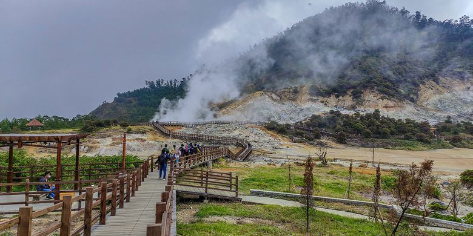

D e s t i n a s i


Kawah Sikidang
lihat detail
Bukit Sikunir
lihat detail
Gunung Prau
lihat detail
Telaga Dringo
lihat detail
Dieng Plateau, atau dataran tinggi Dieng, merupakan salah satu situs bersejarah paling terkenal di Jawa Tengah, Indonesia. Dataran ini sudah sangat akrab bagi masyarakat Indonesia, karena terkenal dengan pesona alamnya yang indah di Pulau Jawa, dikelilingi oleh pegunungan hijau dan hamparan awan yang memunculkan udara dingin yang segar.
Selain keindahan alamnya yang tak tertandingi, Dieng juga menyimpan banyak objek wisata geologi dan sejarah yang menarik untuk dikunjungi. Beberapa tempat wisata di Dieng antara lain kawah, telaga, dan kompleks kawasan Candi Hindu yang mampu menarik para wisatawan untuk kembali berkunjung. Keindahannya tidak hanya terkenal di dalam negeri, namun namanya juga telah meraih ketenaran hingga di luar negeri.
Dataran tinggi Dieng atau Plato Dieng adalah sebuah wilayah di pusat Jawa Tengah yang memiliki ciri geologi, sejarah, dan pertanian yang dinilai khas.[oleh siapa?] Dataran ini diapit oleh jajaran perbukitan di sisi utara dan selatannya, yang berasal dari aktivitas vulkanik yang sama dan disebut Pegunungan Dieng. Pegunungan Dieng sendiri secara geografis berada di antara kompleks Puncak Rogojembangan di sebelah barat dan pasangan Gunung Sindoro dan Gunung Sumbing di sisi timurnya. Secara kasar dapat dikatakan bahwa wilayah Dataran tinggi Dieng menempati kawasan berukuran lebar (utara–selatan) 4–6 km dan panjang (barat–timur) 11 km.[1]
Secara administrasi, dataran tinggi Dieng berada dalam wilayah Kecamatan Batur dan sebagian Kecamatan Pejawaran, Kabupaten Banjarnegara, Kecamatan Kejajar, Kabupaten Wonosobo, dan bagian selatan dari Desa Pranten, Bawang, Kabupaten Batang, dengan inti kawasan wisata berada pada wilayah Desa Dieng Kulon (di Banjarnegara) dan Desa Dieng ("Dieng Wetan" di Wonosobo). Ketinggian dataran berada pada 1600 sampai 2100 mdpl dengan arah aliran permukaan ke barat daya,[1] menuju ke lembah Sungai Serayu. Dengan suhu udara berkisar 12–20 °C di siang hari dan 6–10 °C di malam hari, meskipun pada musim kemarau (Juli dan Agustus), suhu udara dapat mencapai 0 °C di pagi hari, iklim di dataran tinggi Dieng termasuk iklim subtropis dan memunculkan embun beku yang oleh penduduk setempat disebut bun upas ("embun racun") karena menyebabkan kerusakan pada tanaman pertanian.